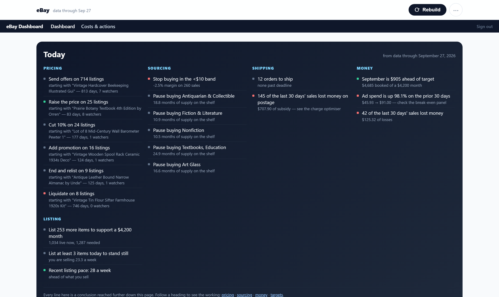
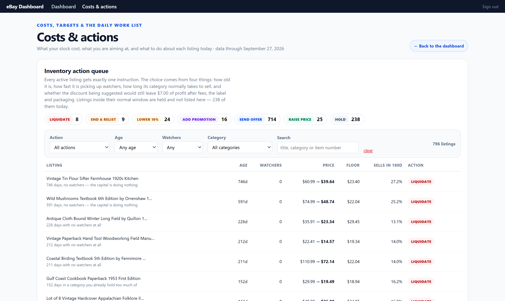
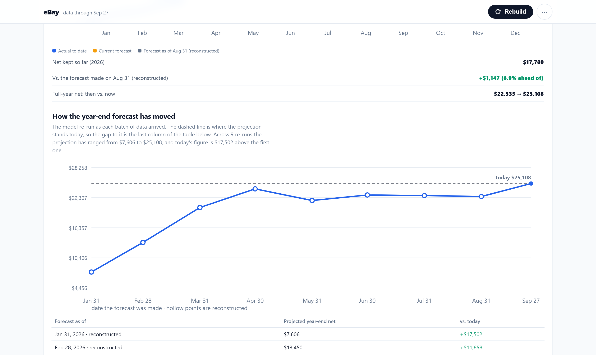

Reads the exports you already download. No API keys, no OAuth, no marketplace password — and one page that ends in instructions rather than graphs.
Captures of the real application against its bundled demo store — 26 uploads and 2,275 item costs written by the included seeder. The store is invented, the arithmetic is not. Nothing here is mocked up or retouched.
What it looks like

The Today briefing. Pricing, sourcing, shipping, money and listing, each line a conclusion with the figure behind it — “stop buying in the <$10 band, −2.5% margin on 260 sales”. The footer says it plainly: every line here is a conclusion reached further down this page, and each heading links to its working.

The inventory action queue. Every active listing gets exactly one instruction — liquidate, end and relist, lower 10%, add promotion, send offer, raise price or hold. The choice comes from age, watcher velocity, how long the category normally takes to sell, and whether the suggested discount still leaves $7.00 of profit after fees, label and packaging. Listings inside their normal window are held and not shown.

How the year-end forecast has moved. The model re-run as each batch of data arrived, so you can see the projection change rather than trust today's number alone. Hollow points are reconstructed and labelled as such.
How it was checked
29 tests pass, and the whole buyer path was run from a clean extract of the shipped zip: install, seed, serve, sign in, every page.
The panel counts on the listing were recounted, not estimated — 75 panels, 55 tables and 36 charts, measured in the rendered DOM. An earlier draft claimed “eighty panels”; the real number is lower and it is the one used.
Two Windows-blocking defects were found and fixed before it was packaged.
Personal data confirmed scrubbed: the dashboard was carved out of a private project, and the demo store is entirely synthetic.
Not included
No eBay API, no OAuth, no marketplace password. It reads the CSV exports you download yourself. That is deliberate — nothing breaks when eBay changes its API terms — but if you want live sync, this is the wrong product.
Nothing syncs and nothing writes back to eBay. It tells you what to do; you do it.
Fee figures fall back to estimates if you do not upload the transaction report.
A single password gate, meant for one operator on a machine they control. It is not multi-user and has no accounts.
Get it
eBay Seller Dashboard — $9
Complete Flask source. SQLite or Postgres, a bundled demo store so it is populated on first run, and no API credentials anywhere.